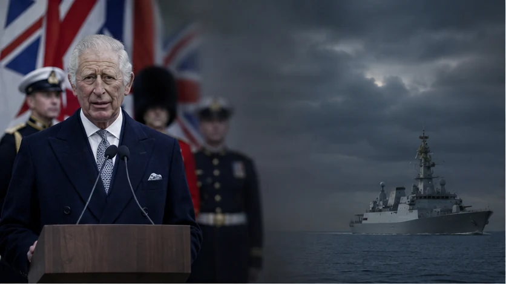
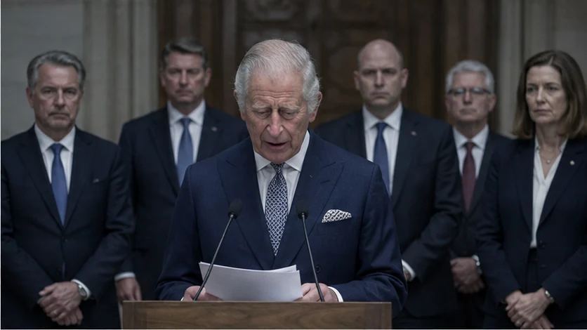
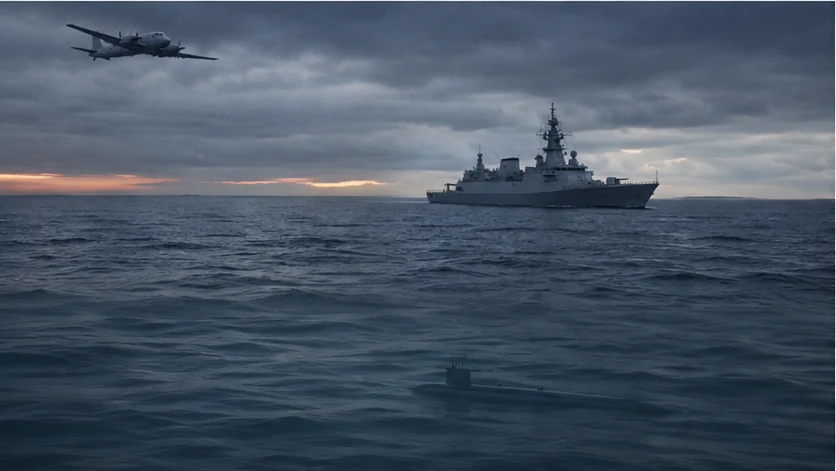
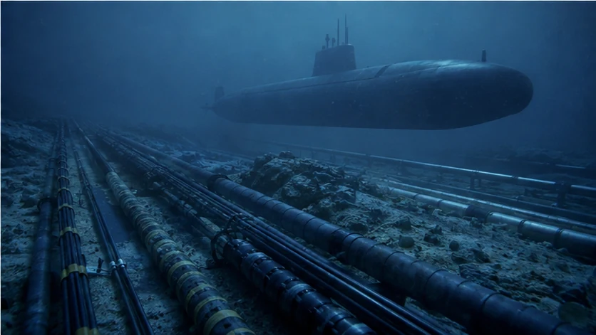

Carlo III, il governo e la macchina militare britannica: come un pericolo reale può diventare una necessità permanente, un mercato e uno strumento di potere.
Uno Sguardo sull’UomoTempo di lettura: 15 minuti
Regno UnitoCarlo IIIRussiaNATOUcrainaIndustria della difesaPropaganda militare

Elaborazione grafica editoriale di Uno Sguardo sull’Uomo. L’immagine ha funzione illustrativa e non documenta un evento reale.
Il punto
Una minaccia non deve essere falsa per diventare propaganda: può essere selezionata, amplificata e caricata emotivamente fino a trasformare una scelta politica in una necessità apparentemente inevitabile.
UNO SGUARDO SULL'UOMO • Dossier d'inchiesta • aggiornato al 2 settembre 2026
IL PUNTO DA CUI SIAMO PARTITI
La Gran Bretagna non confina con la Russia. Non ha vissuto l'occupazione sovietica dei Paesi baltici, non porta il trauma strategico della Polonia e non condivide con la Finlandia oltre mille chilometri di frontiera russa. Eppure Londra è stabilmente tra gli attori europei che spingono di più sulla pressione militare, economica e politica contro Mosca.
Il comportamento è osservabile. Il Regno Unito co-guida con la Francia la Coalition of the Willing, prepara una forza multinazionale per l'Ucraina, ne ha assunto il comando nel luglio 2026, sostiene capacità di attacco a lungo raggio, agisce contro la shadow fleet russa e ha costruito con Kyiv una partnership destinata formalmente a durare cento anni.
Non è necessario sostenere che Londra inventi la minaccia. La Russia ha invaso l'Ucraina e costituisce un problema di sicurezza reale. La domanda più difficile è un'altra: che cosa produce, per Londra, una Russia percepita come minaccia permanente?
Produce la necessità di una macchina militare enorme, costosa e pronta all'impiego. Produce industria, ordini, occupazione, leadership NATO, accordi bilaterali, influenza sulla futura sicurezza ucraina e una posizione anticipata nella ricostruzione. La minaccia è un rischio. Ma per la Gran Bretagna è anche una risorsa strategica.
UNA MACCHINA CHE COSTA ANCHE QUANDO RESTA FERMA
Al 1° aprile 2026 le Forze Armate britanniche contano 183.410 persone. I regolari sono 137.970; a questi si aggiungono Gurkha, riservisti volontari e altre categorie. Non sono 183 mila uomini immediatamente schierabili su un fronte terrestre, ma costituiscono comunque una macchina militare che deve essere pagata, addestrata, equipaggiata, alloggiata e mantenuta ogni giorno.
Un esercito non diventa economico quando non combatte. Gli stipendi continuano, i mezzi richiedono manutenzione, le basi funzionano, le scorte devono essere rinnovate e l'industria deve ricevere ordini se si vuole conservare la capacità produttiva. Una grande forza armata inattiva resta una grande spesa; una forza percepita come indispensabile diventa invece uno strumento di potere.
La NATO aggiunge un secondo livello. Londra versa la propria quota ai bilanci comuni dell'Alleanza anche se non invia un singolo soldato in una determinata missione. Per il 2026-2027 la quota britannica è il 10,3277%, una delle più alte. Parallelamente, gli impegni NATO spingono gli Stati ad aumentare la spesa nazionale per difesa e sicurezza fino al 5% del PIL entro il 2035, con almeno il 3,5% destinato ai requisiti di difesa core.
Londra, dunque, non sceglie semplicemente tra spendere e non spendere. Una parte rilevante della spesa esiste comunque. La vera scelta è quale funzione politica, industriale e internazionale attribuirle.
NON SOLO NATO: UNA POLITICA BRITANNICA A 360 GRADI
Ridurre la postura britannica alla partecipazione alle iniziative NATO significa perderne il tratto più caratteristico. Londra opera nell'Alleanza, ma anche al di fuori di essa: applica un proprio regime di sanzioni, immobilizza beni russi, colpisce la shadow fleet, firma accordi diretti con Kyiv e costruisce cooperazioni bilaterali con altri Paesi europei.
Con la Polonia, il trattato di partnership per sicurezza e difesa firmato il 27 maggio 2026 comprende sviluppo congiunto di missili, interoperabilità, sicurezza energetica, coordinamento delle sanzioni e contrasto alla flotta ombra. Con la Francia, Londra co-guida la Coalition of the Willing. Con l'Ucraina, la relazione militare e industriale è stata progettata per sopravvivere alla guerra.
Il Regno Unito non si limita quindi a eseguire una strategia occidentale già decisa altrove. Cerca di organizzarla, collegarla ai propri strumenti nazionali e trasformarla in leadership britannica.
BENI RUSSI: DAL CONGELAMENTO ALL'USO ECONOMICO
Il Regno Unito ha comunicato di avere congelato oltre 25 miliardi di sterline di beni russi. Congelare non significa trasferire automaticamente la proprietà allo Stato britannico: il titolare formale non può disporre del bene, ma il capitale non è per questo definitivamente confiscato.
Il passaggio politicamente rilevante avviene quando gli asset immobilizzati cessano di essere soltanto bloccati e cominciano a finanziare un'altra politica. Il contributo britannico di 2,26 miliardi di sterline al prestito G7 Extraordinary Revenue Acceleration per l'Ucraina è destinato a essere rimborsato mediante i profitti generati dagli asset sovrani russi immobilizzati.
Il capitale resta formalmente russo, ma la sua utilità economica viene sottratta alla Russia e destinata al finanziamento di Kyiv. Non è ancora la confisca integrale del capitale; è però qualcosa di più di un congelamento conservativo: Londra partecipa all'impiego attivo del valore prodotto da quei beni contro lo Stato al quale appartengono.
TRUPPE, NATO E RITORNO ECONOMICO: IL PRECEDENTE BRITANNICO
Le truppe nazionali restano in larga misura a carico dello Stato che le fornisce. Il valore economico di un grande dispiegamento internazionale nasce però anche da ciò che mette in movimento: infrastrutture, logistica, acquisti, compensazioni, industria e peso negoziale.
Il precedente della British Army of the Rhine è illuminante. Durante la Guerra fredda la Gran Bretagna teneva decine di migliaia di uomini nella Germania occidentale. Londra considerava il costo valutario dello schieramento un problema serio e negoziò con Bonn accordi di compensazione: acquisti militari e civili britannici, pagamenti e altre misure destinate a compensare il costo della presenza britannica.
Nel maggio 1971 il governo comunicò alla Camera dei Comuni che il valore delle disposizioni di offset concordate dal 1961 aveva raggiunto 581 milioni di sterline dell'epoca. In un dibattito del 1970 spiegava inoltre che gli accordi compensavano circa l'80% dei costi in valuta estera delle forze britanniche in Germania.
Il precedente non dimostra che ogni missione sia decisa per guadagno. Dimostra però che Londra possiede una lunga esperienza nel trasformare un impegno militare NATO in un sistema di compensazioni, acquisti e ritorni economici negoziati. Il valore di una missione non coincide con il rimborso del singolo soldato: sta in tutto ciò che la missione mette in movimento.
IL GOVERNO LO SCRIVE: LA DIFESA È UN MOTORE DI CRESCITA
La Strategic Defence Review britannica definisce esplicitamente la difesa un 'engine for growth': motore di crescita. Nel 2023/24 il Ministero della Difesa ha speso circa 29 miliardi di sterline con l'industria britannica; secondo lo stesso documento, la difesa sostiene circa 440 mila posti di lavoro nel Regno Unito.
La Review non separa sicurezza e industria. Le inserisce nello stesso progetto: 'NATO First', prontezza alla guerra, nuovi stabilimenti per munizioni, produzione di armi a lungo raggio, procurement accelerato, innovazione, posti di lavoro e crescita. Il governo ha annunciato almeno sei nuovi impianti per munizioni ed energetici, 1,5 miliardi di sterline di investimento e fino a 7.000 armi a lungo raggio costruite nel Regno Unito.
Affermare che la guerra rappresenti anche un affare per Londra non richiede di attribuire un'intenzione segreta al governo. È il governo stesso a presentare la spesa militare come politica industriale, sostegno all'occupazione, capacità di esportazione e crescita nazionale.
IL DISCORSO È DEL GOVERNO. LA VOCE E LA RESPONSABILITÀ PUBBLICA SONO ANCHE DEL RE

Elaborazione editoriale: il governo costruisce il messaggio; il Re lo pronuncia e gli conferisce la voce pubblica della Corona. L’immagine non documenta un evento reale.
Il King's Speech è redatto dal governo e approvato politicamente dal Cabinet. Ma questa origine non rende Carlo III un lettore estraneo alle parole che pronuncia. Il sovrano riceve preventivamente il testo, può formulare osservazioni sulla forma, firma la copia ufficiale e accetta di presentarlo davanti al Parlamento come discorso del Re.
Le responsabilità non si sostituiscono. Il governo risponde della costruzione politica del messaggio; Carlo risponde dell'atto consapevole di pronunciarlo e di conferirgli la voce della Corona. Attribuire responsabilità al Re non assolve l'esecutivo; attribuirla all'esecutivo non rende irrilevante il Re.
Il punto è particolarmente significativo quando il messaggio riguarda la difesa. Carlo III è il capo delle Forze armate britanniche; esse sono costituzionalmente forze della Corona e i militari giurano fedeltà al sovrano. Il controllo operativo appartiene al governo, ma la continuità, l'onore e la legittimità simbolica dell'apparato militare sono rappresentati dal Re.
Quando Carlo afferma che un mondo sempre più pericoloso e instabile minaccia il Regno Unito, la valutazione del governo assume perciò una forma diversa da una normale dichiarazione di partito. Non cambia il fatto descritto: cambia il suo peso. La minaccia viene pronunciata dal capo dello Stato e dal vertice simbolico delle stesse Forze armate la cui espansione deve essere giustificata.
È in questo passaggio che l'informazione può diventare propaganda militare. Non occorre inventare un nemico. È sufficiente selezionare un pericolo reale, isolarlo dal contesto, caricarlo emotivamente e collegarlo a una risposta militare presentata come inevitabile, senza dimostrare che le capacità esistenti siano insufficienti, che la risposta sia proporzionata o che non esistano alternative.
La comunicazione britannica agisce inoltre in due direzioni. All'interno dice: siamo minacciati, quindi dobbiamo spendere e prepararci. All'esterno dice: provateci e vedrete la nostra risposta. La paura rende accettabile il costo; la dimostrazione di forza riafferma il ruolo internazionale del Regno Unito.
L'UCRAINA NON È SOLO IL FRONTE: È GIÀ UN SISTEMA ECONOMICO
Il Regno Unito ha impegnato complessivamente 25 miliardi di sterline a favore dell'Ucraina: 16 miliardi in sostegno militare, fino a 5,6 miliardi in sostegno non militare e 3,5 miliardi di capacità di export finance destinabile anche a progetti di ricostruzione e difesa.
Nel gennaio 2025 Londra e Kyiv hanno firmato una partnership della durata dichiarata di cento anni. Il testo prevede cooperazione tra industrie della difesa, joint venture, produzione congiunta, trasferimenti tecnologici, capacità di attacco a lungo raggio, esportazioni verso mercati terzi, infrastrutture militari, logistica e allineamento degli acquisti ucraini agli standard NATO.
Nel 2026 il rapporto si è ulteriormente stretto. La dichiarazione bilaterale di marzo riguarda cooperazione industriale, scambio di informazioni, sviluppo delle capacità, addestramento ed esercitazioni. A luglio un generale britannico ha assunto, nell'ambito della rotazione prevista con la Francia, il comando della Multinational Force for Ukraine, predisposta per un eventuale dispiegamento dopo una cessazione credibile delle ostilità.
Se sei già nel comando, nell'addestramento, nell'intelligence, nella logistica, nella produzione e nella costruzione delle nuove capacità ucraine, non arrivi alla ricostruzione come un'impresa straniera che bussa alla porta. Ci arrivi già dentro il sistema.
13 LUGLIO 2026: IL PASSAGGIO CHE RENDE VISIBILE IL RITORNO
Il 13 luglio 2026 Downing Street annuncia l'accordo che consente alle imprese britanniche della difesa di concorrere ai contratti finanziati dal programma europeo Ukraine Support Loan da 90 miliardi di euro. Sessanta miliardi sono destinati alle capacità di difesa ucraine nel biennio 2026-2027.
Il comunicato britannico non nasconde il ritorno nazionale: lo mette nel titolo, parlando di sostegno a 'British jobs and industry'. Annuncia miliardi di potenziali investimenti, posti di lavoro qualificati e rafforzamento della base industriale britannica. La contribuzione del Regno Unito sarà proporzionata al valore dei contratti ottenuti dalle sue aziende.
Il Regno Unito non è più nell'Unione Europea, ma entra in uno dei maggiori flussi europei destinati alla difesa dell'Ucraina. Sostiene Kyiv, contribuisce all'architettura militare e contemporaneamente apre alle proprie imprese un mercato finanziato su scala continentale.
La partita non consiste soltanto nello spendere durante la guerra. Consiste nell'arrivare prima degli altri nel Paese che dovrà essere ricostruito.
CHI RICOSTRUISCE ENTRA PRIMA DI CHI VENDE
La ricostruzione non comincia il giorno successivo alla pace. Comincia durante la guerra: assicurazioni contro il rischio bellico, export finance, ponti, energia, carburante nucleare, infrastrutture, banche, procurement, standard tecnici, addestramento e filiere industriali.
La Gran Bretagna è già presente in questi segmenti. UK Export Finance ha sostenuto progetti compreso il rifacimento di sei ponti nella regione di Kyiv e dispone di un limite di copertura da 3,5 miliardi di sterline per ricostruzione e difesa. British International Investment lavora con la BERS; il Regno Unito finanzia programmi economici, energetici e di governance e ha aperto a Kyiv un centro destinato a rafforzare la presenza dell'industria britannica della difesa.
Il mercato finale della ricostruzione non è ancora assegnato. Intanto Londra costruisce relazioni, meccanismi finanziari, standard militari e canali industriali prima che la guerra sia finita. Il vantaggio non è soltanto diventare creditore: è essere già seduto al tavolo quando verranno decisi i progetti.
AGOSTO 2026: LA MINACCIA E L'APPARATO SI ALIMENTANO A VICENDA

Elaborazione editoriale: la sorveglianza rende visibile la minaccia, ma non dimostra da sola la proporzionalità di ogni nuova spesa militare. L’immagine non documenta un evento reale.
Gli sviluppi di agosto rendono visibile il circuito descritto in questo dossier. Il 6 agosto Londra ha annunciato nuove sanzioni contro banche, imprese e navi della flotta ombra russa. L'8 agosto il Ministero della Difesa ha comunicato che le operazioni navali britanniche di sorveglianza dell'attività russa erano aumentate del 25% nei primi sette mesi dell'anno.
Il 27 agosto Mosca ha minacciato attacchi contro obiettivi militari britannici, dentro e fuori l'Ucraina, in risposta all'impiego di tecnologia missilistica britannica contro obiettivi russi. Due giorni dopo la Royal Navy ha reso nota un'altra operazione di monitoraggio di navi russe e della shadow fleet nel Mare del Nord e nelle acque britanniche.
Questi episodi non dimostrano che il pericolo sia immaginario: mostrano una contrapposizione reale. Non dimostrano però, da soli, che ogni incremento di mezzi e spesa sia necessario o proporzionato. Il passaggio dall'avvistamento di una nave alla conclusione che servano nuove capacità militari resta una scelta politica. La propaganda agisce quando quel passaggio viene presentato come automatico.
La minaccia giustifica l'apparato; l'apparato, per conservare risorse, funzione e centralità, ha bisogno che la minaccia rimanga visibile. Ogni iniziativa britannica provoca una risposta russa; ogni risposta russa rafforza la richiesta britannica di maggiore preparazione. Il rischio può essere autentico e il circuito può comunque produrre interessi, consenso e autoalimentazione.
E MOSCA? VEDE ESATTAMENTE QUESTA GRAN BRETAGNA
La Russia non tratta Londra come un semplice sostenitore europeo di Kyiv. La descrive come uno dei Paesi che spingono più avanti l'escalation. Nell'agosto 2026 Mosca ha minacciato possibili attacchi contro obiettivi militari britannici in risposta all'impiego di missili britannici da parte ucraina contro territorio controllato dalla Russia.
La posizione russa non prova che l'interpretazione di Mosca sia corretta: la Russia è parte belligerante e produce la propria propaganda. Dimostra però come la postura britannica venga percepita dall'avversario.
Il meccanismo diventa circolare. Londra aumenta presenza e pressione; Mosca reagisce con minacce; quelle minacce rendono più facile giustificare una Gran Bretagna più armata, più presente e più centrale nella NATO. Ogni giro del meccanismo accresce il valore strategico della macchina britannica.
IL BASTIAN CONTRARIO: LONDRA POTREBBE AVERE RAGIONE

Elaborazione editoriale: in prossimità di cavi, condotte e infrastrutture critiche, il rischio può essere concreto. L’immagine non documenta un evento reale.
La Russia ha invaso l'Ucraina. Il governo britannico considera Mosca una minaccia immediata e pressante; la Strategic Defence Review richiama cyberattacchi, sabotaggio, guerra sottomarina, operazioni informative e capacità nucleari. Il Regno Unito ha inoltre subito attività russe sul proprio territorio e considera concreta la protezione delle infrastrutture critiche.
Londra può quindi leggere la propria postura come quella di uno Stato che si prepara, si arma e cerca di impedire che una guerra europea si allarghi. La durezza britannica può essere considerata deterrenza, non desiderio di guerra.
Anche accettando integralmente questa spiegazione, il punto economico resta intatto. È il governo britannico a collegare difesa, crescita, occupazione, produzione, export e procurement. È Londra ad annunciare che l'accesso al prestito europeo apre contratti alle imprese del Regno Unito. È ancora Londra a costruire con Kyiv una partnership militare e industriale destinata formalmente a cento anni.
La minaccia russa può essere reale e, nello stesso tempo, produrre per la Gran Bretagna opportunità economiche, industriali e geopolitiche altrettanto reali. Le due cose non si escludono. Proprio la loro coesistenza è l'oggetto di questa inchiesta.
IL PUNTO NON È SE LONDRA VUOLE LA GUERRA
Questo dossier non afferma che la Russia non costituisca una minaccia né che ogni decisione britannica sia dettata dal profitto. Mostra però che un pericolo reale può essere trasformato in propaganda quando viene amplificato emotivamente e collegato a una risposta militare presentata come inevitabile. Il governo costruisce la politica e il messaggio; Carlo III lo pronuncia, lo fa proprio come discorso del Re e gli conferisce l'autorità della Corona. Le responsabilità sono differenti e concorrenti.
I fatti pubblici mostrano una grande macchina militare da finanziare, la difesa definita motore di crescita, l'apertura di mercati alle imprese britanniche, la leadership NATO e una rete già inserita nella futura sicurezza e ricostruzione ucraina. La domanda non è soltanto se la minaccia produca nuovi armamenti. È anche se un apparato già esistente contribuisca a selezionare e amplificare le minacce che ne rendono indispensabili il mantenimento e l'espansione.
Londra non deve inventare la minaccia per ricavarne valore. Può trasformarla in produzione, contratti, occupazione, leadership e presenza. Il fatto iniziale può essere vero mentre la necessità costruita intorno ad esso può risultare sproporzionata, interessata o artificiale.
Una Russia aggressiva è certamente un rischio per il Regno Unito. Ma è anche ciò che rende più facile giustificare spesa, produzione, capacità a lungo raggio, leadership NATO e investimenti industriali. Più Londra diventa indispensabile alla sicurezza europea, più aumenta la possibilità che le sue imprese diventino indispensabili nella fase successiva.
Quando la minaccia diventa contemporaneamente rischio, mercato e fonte di potere, la domanda non è se Londra abbia diritto a difendersi. La domanda è quanto possa essere disinteressata nel definirne la durata, l'intensità e la risposta.
NOTA DI METODO
Il dossier distingue fatti, interpretazioni e domande. Per propaganda si intende qui l'organizzazione della comunicazione pubblica volta a creare o amplificare un bisogno, oppure a usare una leva emotiva per rendere accettabile una decisione negativa, costosa o controversa. Il termine non implica necessariamente che il pericolo iniziale sia inventato.
Non si sostiene che la minaccia russa sia inventata, che il Regno Unito desideri il prolungamento della guerra o che motivazioni economiche siano l'unica causa della sua politica. Si osserva che la contrapposizione con Mosca produce per Londra benefici industriali, occupazionali, finanziari e geopolitici; si domanda quale peso possano avere tali benefici nella definizione della postura britannica.